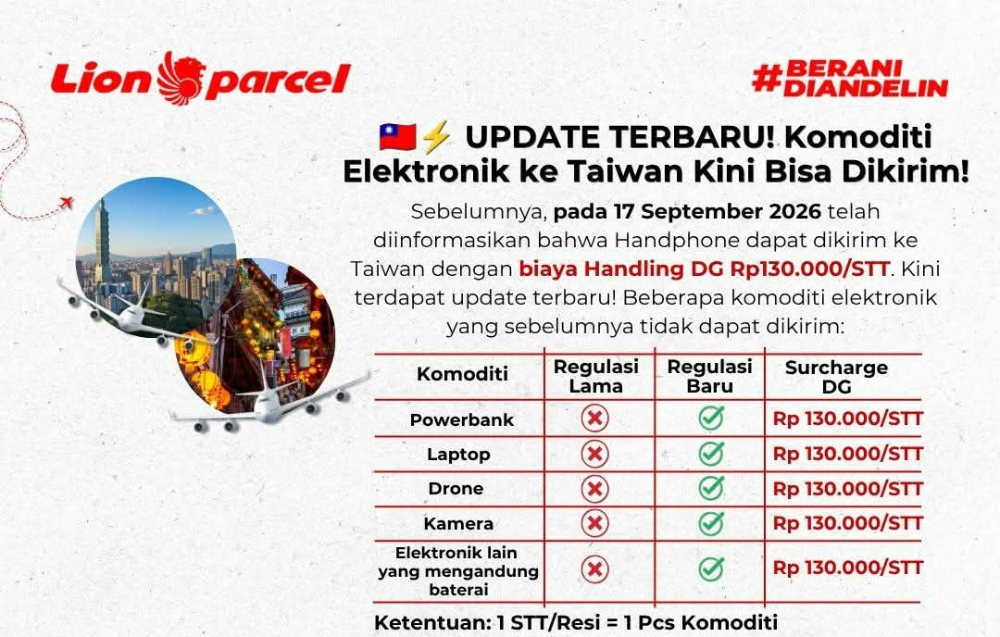

Kirim Elektronik ke Taiwan Kini Bisa! Powerbank, Laptop, Drone, dan Kamera

Kabar baik bagi masyarakat Indonesia yang ingin mengirimkan perangkat elektronik ke Taiwan. Terdapat pembaruan informasi mengenai penerimaan sejumlah komoditi elektronik melalui layanan pengiriman Lion Parcel.
Sebelumnya, pada 17 September 2026, terdapat informasi bahwa pengiriman handphone ke Taiwan sudah dapat dilakukan. Selanjutnya, berdasarkan informasi pembaruan operasional yang menjadi acuan artikel ini, sejumlah komoditi elektronik lainnya juga dapat diajukan untuk pengiriman dengan ketentuan khusus.
Barang yang termasuk dalam informasi pembaruan tersebut antara lain powerbank, laptop, drone, kamera, serta perangkat elektronik lain yang mengandung baterai. Pengiriman kategori ini dikenakan biaya tambahan Dangerous Goods (DG) sesuai ketentuan yang berlaku.
⚠️ Pemberitahuan Penting!
Syarat dan ketentuan pengiriman dapat berubah sewaktu-waktu mengikuti kebijakan operasional Lion Parcel, ketentuan transportasi, serta peraturan negara tujuan.
Pastikan Anda melakukan konfirmasi terlebih dahulu kepada petugas sebelum menyerahkan barang untuk dikirim.
Mau Kirim Elektronik ke Taiwan?
Ingin mengetahui biaya, persyaratan, dan ketentuan pengiriman powerbank, laptop, drone, atau kamera? Konsultasikan terlebih dahulu bersama Lion Parcel Bandung POS101.
💬 Chat WhatsApp 0851-8309-04861. Daftar Komoditi Elektronik yang Bisa Dikirim ke Taiwan
Berdasarkan informasi pembaruan operasional yang disampaikan, berikut beberapa jenis komoditi elektronik yang dapat diajukan untuk pengiriman ke Taiwan dengan tambahan biaya Surcharge DG:
-
Powerbank:
Perangkat penyimpan daya portabel yang menggunakan baterai lithium.
Biaya tambahan: Rp130.000/STT. -
Laptop:
Komputer portabel yang menggunakan baterai internal.
Biaya tambahan: Rp130.000/STT. -
Drone:
Perangkat pesawat tanpa awak yang menggunakan baterai untuk pengoperasiannya.
Biaya tambahan: Rp130.000/STT. -
Kamera:
Perangkat fotografi atau perekaman video yang menggunakan baterai.
Biaya tambahan: Rp130.000/STT. -
Elektronik lainnya yang mengandung baterai:
Perangkat elektronik tertentu yang masuk dalam kategori komoditi yang diizinkan.
Biaya tambahan: Rp130.000/STT, sesuai ketentuan dan persetujuan layanan.
Perlu diketahui bahwa penerimaan barang tetap bergantung pada jenis baterai, spesifikasi produk, kondisi barang, jumlah, kemasan, dan persyaratan pengangkutan yang berlaku.
2. Berapa Biaya Surcharge DG Pengiriman Elektronik ke Taiwan?
Untuk komoditi elektronik yang termasuk dalam pembaruan informasi tersebut, terdapat biaya tambahan yang disebut Surcharge Dangerous Goods (DG).
Besaran biaya tambahan yang diinformasikan adalah:
Rp130.000 / STT
STT merupakan nomor transaksi pengiriman atau nomor resi. Biaya tersebut merupakan surcharge DG dan bukan keseluruhan ongkos kirim ke Taiwan.
📌 Ketentuan Perhitungan
1 STT / Resi = 1 Pcs Komoditi
Perhitungan dan penerapan biaya mengikuti ketentuan operasional yang berlaku. Konfirmasikan jumlah barang dan biaya akhir sebelum melakukan transaksi.
Dengan demikian, pelanggan perlu memperhitungkan biaya pengiriman utama dan biaya tambahan DG agar memperoleh estimasi total ongkos kirim yang lebih akurat.
📍 Lokasi Lion Parcel Bandung POS101 Nanjungmekar
Jl. Raya Barat Cicalengka RT 1 RW 1, Nanjung Mekar, Rancaekek, Kabupaten Bandung, Jawa Barat.
3. Persyaratan Sebelum Mengirim Barang Elektronik ke Taiwan
Walaupun terdapat pembaruan penerimaan komoditi elektronik, bukan berarti seluruh perangkat dapat dikirim tanpa pemeriksaan. Barang yang mengandung baterai memiliki ketentuan keselamatan tersendiri dalam proses pengangkutan.
Sebelum datang ke agen, sebaiknya persiapkan beberapa informasi berikut:
- Jenis barang: Sampaikan apakah barang berupa powerbank, laptop, drone, kamera, atau perangkat elektronik lainnya.
- Spesifikasi baterai: Siapkan informasi kapasitas baterai, tegangan, dan jenis baterai apabila tersedia.
- Kondisi perangkat: Pastikan barang tidak mengalami kerusakan baterai, kebocoran, atau kondisi yang berpotensi membahayakan.
- Jumlah barang: Informasikan jumlah unit yang akan dikirim untuk membantu pengecekan biaya dan ketentuan STT.
- Alamat penerima: Siapkan alamat lengkap dan nomor telepon penerima di Taiwan.
- Kemasan: Ikuti instruksi pengemasan yang diberikan petugas sesuai jenis perangkat dan persyaratan pengangkutan.
Jangan melakukan pengiriman sebelum memperoleh konfirmasi bahwa barang dan spesifikasinya memenuhi ketentuan layanan yang digunakan.
4. Pengiriman Elektronik untuk Keluarga dan Pekerja Indonesia di Taiwan
Taiwan menjadi salah satu tujuan pengiriman internasional bagi masyarakat Indonesia, termasuk keluarga yang ingin mengirimkan barang kepada kerabat maupun Pekerja Migran Indonesia (PMI).
Perangkat seperti laptop, kamera, dan perlengkapan elektronik dapat menjadi kebutuhan penting untuk pekerjaan, komunikasi, pendidikan, maupun aktivitas sehari-hari.
Dengan adanya informasi pembaruan penerimaan komoditi elektronik, pelanggan memiliki alternatif untuk mengajukan pengiriman perangkat tertentu ke Taiwan melalui layanan Lion Parcel, selama barang memenuhi seluruh persyaratan yang berlaku.
5. Cara Konsultasi Pengiriman Elektronik di Lion Parcel POS101 Rancaekek
Bagi masyarakat Rancaekek, Nanjungmekar, Cicalengka, dan sekitarnya, Anda dapat menghubungi Lion Parcel Bandung POS101 untuk mendapatkan informasi awal mengenai pengiriman internasional ke Taiwan.
Agar proses pengecekan lebih mudah, sampaikan informasi berikut kepada petugas:
- Nama atau jenis barang elektronik.
- Jumlah unit yang akan dikirim.
- Spesifikasi baterai jika tersedia.
- Berat dan ukuran paket.
- Alamat tujuan di Taiwan.
Petugas dapat membantu memberikan informasi mengenai layanan, estimasi ongkir, surcharge DG, serta ketentuan penerimaan barang berdasarkan informasi operasional terbaru.
Konsultasikan Pengiriman Anda
Hubungi Lion Parcel Bandung POS101 untuk menanyakan pengiriman elektronik ke Taiwan.
💬 WhatsApp Sekarang6. Pertanyaan Umum Pengiriman Elektronik ke Taiwan
1. Apakah powerbank bisa dikirim ke Taiwan melalui Lion Parcel?
Berdasarkan informasi pembaruan operasional yang dibahas dalam artikel ini, powerbank dapat diajukan untuk pengiriman dengan tambahan Surcharge DG Rp130.000/STT, selama memenuhi ketentuan penerimaan barang.
2. Apakah laptop bisa dikirim ke Taiwan?
Laptop termasuk komoditi elektronik yang tercantum dalam informasi pembaruan penerimaan dengan tambahan biaya DG. Spesifikasi baterai dan persyaratan pengiriman tetap perlu diperiksa.
3. Apakah drone dan kamera bisa dikirim ke Taiwan?
Drone dan kamera termasuk dalam daftar komoditi yang dapat diajukan berdasarkan informasi pembaruan ini. Penerimaan akhirnya tetap mengikuti pemeriksaan dan persetujuan layanan.
4. Berapa biaya tambahan DG untuk pengiriman elektronik ke Taiwan?
Biaya tambahan yang diinformasikan adalah Rp130.000 per STT atau resi. Biaya ini terpisah dari ongkos kirim utama.
5. Apakah satu resi bisa digunakan untuk beberapa komoditi?
Informasi ketentuan yang menjadi acuan artikel ini menyebutkan perhitungan 1 STT atau resi untuk 1 pcs komoditi. Konfirmasikan penerapannya kepada petugas sebelum transaksi.
6. Apakah syarat pengiriman elektronik bisa berubah?
Ya. Syarat, biaya, daftar komoditi yang diterima, dan ketentuan pengiriman dapat berubah sewaktu-waktu mengikuti kebijakan operasional Lion Parcel serta peraturan transportasi dan negara tujuan.
⚠️ Syarat dan Ketentuan Berlaku
Informasi dalam artikel ini merupakan panduan berdasarkan pembaruan operasional yang menjadi acuan penulisan. Syarat dan ketentuan dapat berubah sewaktu-waktu tanpa pemberitahuan sebelumnya.
Penerimaan barang, biaya tambahan, dan persyaratan pengiriman mengikuti kebijakan terbaru Lion Parcel serta ketentuan negara tujuan. Silakan konfirmasi kepada petugas sebelum melakukan pengiriman.
Kesimpulan
Pengiriman elektronik ke Taiwan kini memiliki pembaruan penerimaan untuk sejumlah komoditi, termasuk powerbank, laptop, drone, kamera, dan perangkat elektronik tertentu yang mengandung baterai.
Berdasarkan informasi yang menjadi acuan artikel ini, biaya tambahan Surcharge DG adalah Rp130.000/STT dengan ketentuan perhitungan 1 STT untuk 1 pcs komoditi.
Namun, setiap barang tetap harus memenuhi persyaratan pengiriman dan pemeriksaan operasional. Sebelum mengirimkan perangkat elektronik, pastikan Anda telah mengonfirmasi biaya, spesifikasi barang, dan ketentuan terbaru kepada petugas.
Informasi Agen Lion Parcel:
- Nama Agen: Lion Parcel Bandung POS101 Nanjungmekar Rancaekek
- Jam Operasional: Senin–Minggu, 08.00–20.00 WIB
- Alamat: Jl. Raya Barat Cicalengka RT 1 RW 1, Nanjung Mekar, Rancaekek, Kabupaten Bandung, Jawa Barat.
- WhatsApp: 0851-8309-0486